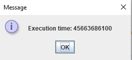

Practical Application of Fast Inverse Square Root Method
It does not take a lot of experimenting with computers to come to the conclusion that they process data very quickly. Unforunately not all data transformations are fast.
Notably, division is a slow process when compared to multiplication and addition; many common programming languages also hold a math library which contains useful methods
Java and many others have a method to solve for square root, math.sqrt(a), which is helpful but regrettably slow. When presented with 1/√x coding this in Java is simple
yet slow; this artifact will examine ways to speed up this calculation making it much more efficient to compile.
Why should we care?
Knowing the process of calculating 1/√x is neat but when would you ever need this calculation? Any program that works with physics, lighting, rendering will want vector angles normalized to length 1.00.
The difference between the processes are only milliseconds, so why would it make sense to take extra effort to save fractions of a second? The answer lies in scope;
in a vacummn the difference is miniscule, but when writing a function or method that will take thousands or tens of thousands of parameters these small differences add up very
quickly.
Floating Point
Java uses a subset of the IEE 754 binary floating point standard to represent numbers. A float is represented using 32 bits which it mirrors scientific notation
to display numbers up to 2^32. It starts with the sign which denotes if the number is positive or negative, 0 or 1; bits 30-23 represent the exponent and is biased by 127
meaning we encode 127 +/- exponent; bits 22-0 are the mantissa, these are normalized to be between 0.5 and 1 because not all decimal values can be represented in binary so
0.1 for example is approximated by the closest 23 bit binary fraction. There is one hidden bit in the mantissa, since a mantissa always begins with 1 it does not need to be stored.
How do you perform bit manipulation on a float?
The short answer is, you can't. Floats adhere to the IEE 754 standard and cannot be manipluated. Thankfully in Java we have the int data type which does allow bit manipulation.
Java also has a method that accepts a float as an argument and retruns the bits of that float as an int data type which is handy. Once the bits are stored as an int we can bit shift right; this essentially takes the inverse square root because we are halfing a negative exponent.
Magic Number
Magic numbers are tricky in programming because many developers do not understand the specifics of why the number is used or how it came to be, nor do they need to. Although complex understanding some of the maths can be important to understanding the full functionality of the code.
Here we are using a magic number 0x5f3759df, a hexadecimal constant, note that we are using 32 bits to represent scientific notation:s (sign bit), e(exponent 8 bits) and B = 127 the exponent bias, and m(mantissa 23 bits), if we assume x is a positive normal number then 1/√x is approximate to log2(1/√x) or -1/2log2(x), then x=2ex(1 + mx)
then log2(1 + mx) is approximate to mx + sigma where sigma is a free parameter to tune the approximation, with scaling and shifting log2(x) is approximate to ex + mx + sigma then interpreting the floating point bit-pattern of x as an integer we can see that log2(x) is approximate to
Ix/L(223) - (B - sigma), finally we get to the magic number 0x5f3759df which is equal to 3/2L(B - sigma); this magic number lets us find 1/√x in code without using a square root calculation or division by subracting it from the integer representation bit shifted right with a 1% error margin after 1 newton iteration.
Application
This proof of concept application is a simple i/o GUI application that accepts a float input and performs 1/√x two times, one using a method that utilizes bit manipluation
and the second uses the simple way of coding with the Math.sqrt() method and it also display the execution times of each.
Here we enter the input 3.742
The fast inverse square root method outputs 0.5160491
The Math.sqrt() method outputs 0.5169494
First method speed

Second method speed
The output speeds are displayed in nano seconds and the difference between them is 6.1047 miliseconds. Note that the code also generates the GUI window so the execution times
are not solely the calculation methods.